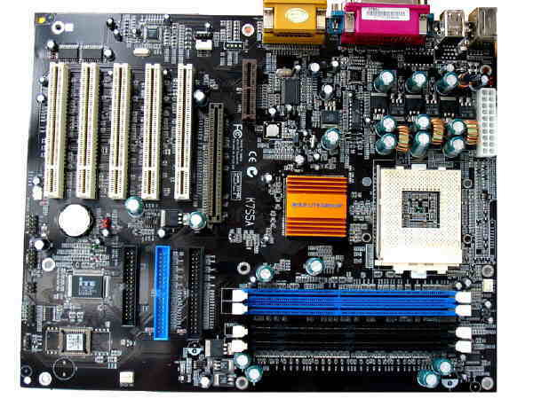

<map name="image-map">
    <area target="" alt="zocalo" title="zocalo" href="zocalo.html" coords="430,301,517,188" shape="rect">
    <area target="" alt="ram" title="ram" href="ram.html" coords="262,320,533,401" shape="rect">
    <area target="" alt="northbridge" title="northbridge" href="northbridge.html" coords="318,268,391,198" shape="rect">
    <area target="" alt="perifericos" title="perifericos" href="perifericos.html" coords="564,0,292,56" shape="rect">
    <area target="" alt="pci" title="pci" href="pci.html" coords="219,71,50,226" shape="rect">
    <area target="" alt="conectores panel frontal" title="conectores panel frontal" href="cpf.html" coords="25,243,45,365" shape="rect">
    <area target="" alt="PCI express" title="PCI express" href="pciexpress.html" coords="233,118,250,252" shape="rect">
    <area target="" alt="PCI express" title="PCI express" href="pciexpress.html" coords="274,69,289,135" shape="rect">
    <area target="" alt="Conector ATX" title="Conector ATX" href="atx.html" coords="538,99,560,177" shape="rect">
    <area target="" alt="Puerto IDE" title="Puerto IDE" href="ide.html" coords="137,275,231,384" shape="rect">
    <area target="" alt="Pila de la Bios" title="Pila de la Bios" href="pilabios.html" coords="84,248,19" shape="circle">
</map>